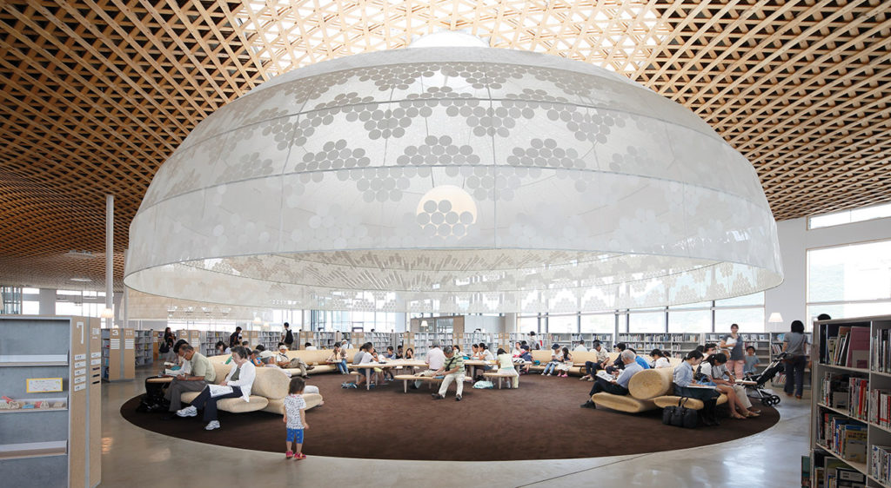
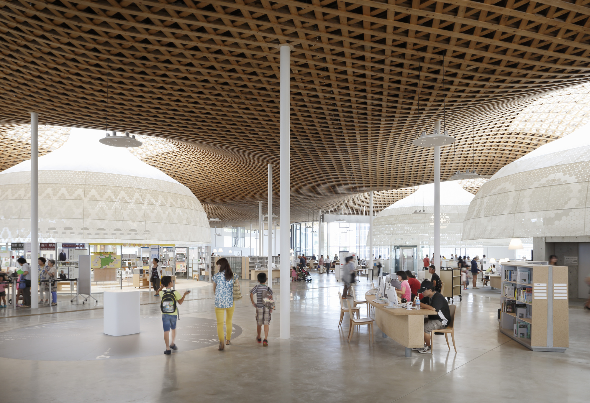

Minna no mori gifu media cosmos
Minna no mori gifu media cosmos est un complexe culturel multifonctionnel situé à Gifu, au Japon. Il comprend le centre de la ville de Gifu, qui sert de “pôle de connaissance”, le centre d’échange des activités communautaires, qui sert de “pôle d’amitié”, et les galeries d’exposition, qui servent de “pôle de culture”.
Le complexe a été conçu par l’architecte Toyo Ito et ses associés, et inauguré en 2013. Il a une forme originale constituée de composants incurvés recouverts d’une couche de béton projeté. Il abrite trois théâtres, dont un avec une capacité pour 2 000 places, un autre pour 800 places et le plus petit pour 200 places. Il comprend également des salles de répétition et un restaurant.
Minna no mori gifu media cosmos est un lieu où l’on peut découvrir la richesse culturelle et artistique de Gifu, ainsi que participer à diverses activités sociales et éducatives. Il accueille des spectacles variés, tels que des opéras, des ballets, des concerts et des pièces théâtrales. Il est également un lieu d’exposition et d’éducation pour le public.